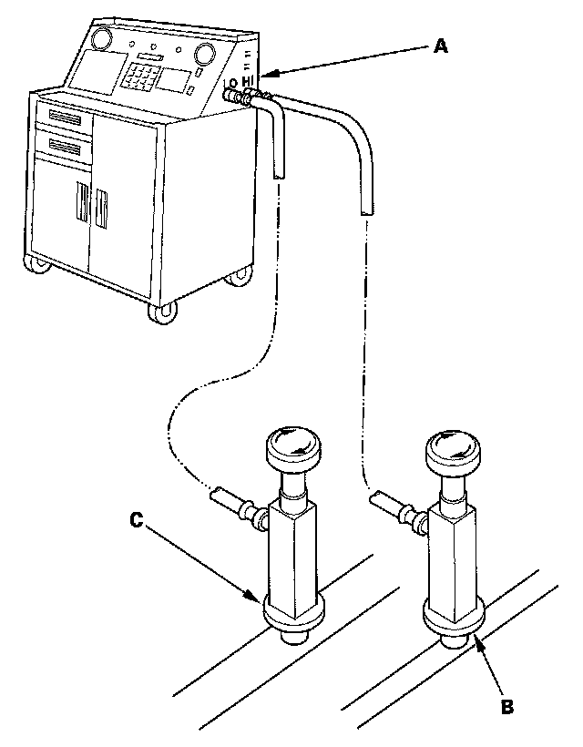

System Charging
System ChargingCAUTION:
- Air conditioning refrigerant or lubricant vapor can irritate your eyes, nose, or throat.
- Be careful when connecting service equipment.
- Do not breathe refrigerant or vapor.
NOTE:
- If accidental system discharge occurs, ventilate the work area before resuming service.
- Additional health and safety information may be obtained from the refrigerant and lubricant manufacturers.

1. Connect an R-134a refrigerant recovery/recycling/charging station (A) to the high-pressure service port (B) and the low-pressure service port (C), as shown, following the equipment manufacturer's instructions.
2. Evacuate the system.
3. Add the same amount of new refrigerant oil to the system that was removed during recovery. Use only DENSO ND-OIL 8 refrigerant oil.
4. Charge the system with the specified amount of R-134a refrigerant. Do not overcharge the system; the A/C compressor will be damaged.
Select the appropriate units of measure for your refrigerant charging station.
Refrigerant Capacity:
600 to 650 g
0.60 to 0.65 kg
1.32 to 1.43 lbs
21.2 to 22.9 oz
5. Check for refrigerant leaks.
6. Check the system performance.